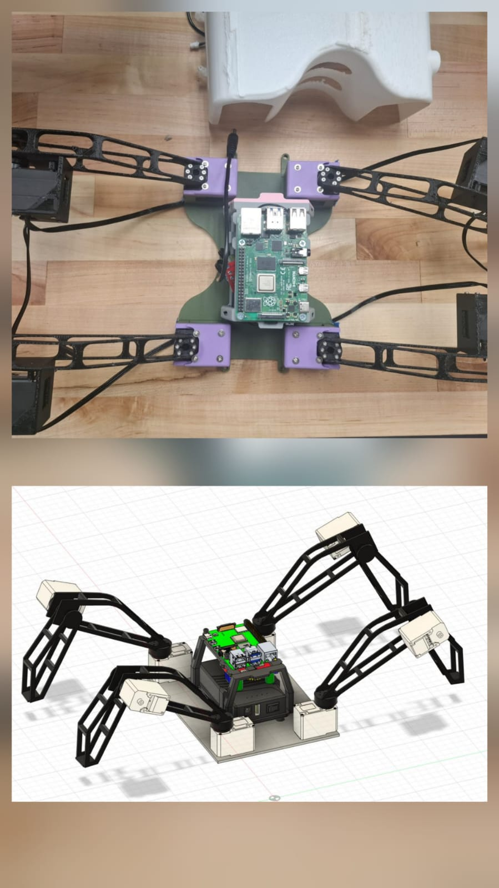
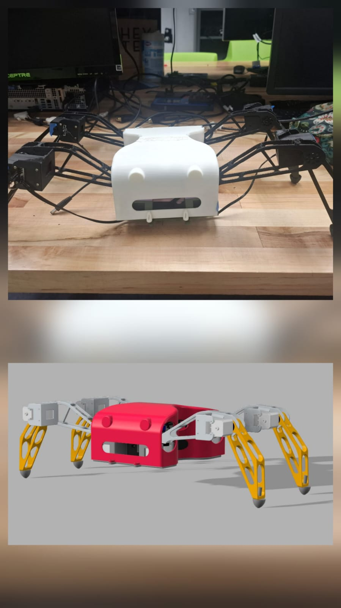

Legged robotics · Hardware prototyping
Servo-Based Quadruped Robot Physical gait prototyping and actuator coordination.
A physical 8-DOF quadruped platform developed to study servo-based locomotion, mechanical alignment, gait timing, weight distribution, and the gap between simulated motion and real hardware behavior.


Define the body, leg geometry, mounts, and actuator placement.
Generate coordinated position commands for each leg.
Drive eight joints across four 2-DOF legs.
Evaluate timing, traction, balance, and hardware behavior.
01 / Problem
Stable walking requires more than moving individual servos.
Legged locomotion depends on coordinated actuator motion, stable ground contact, appropriate weight distribution, mechanical alignment, and precise gait timing.
These challenges become more visible on physical hardware. Small errors in servo position, foot placement, structural alignment, or timing can cause slipping, body rotation, unstable contact, or complete loss of balance.
02 / Mechanical Design
A modular 2-DOF leg architecture.
The robot uses four legs with two actuated joints per leg, producing an 8-DOF platform. Custom CAD parts and 3D-printed servo mounts connect the actuators to the body while maintaining a compact and repeatable leg structure.
The design was developed around the physical dimensions and motion limits of the LX-16A servos. Joint placement, link geometry, mounting alignment, wiring clearance, and access to the electronics were considered during assembly.
03 / Control System
Coordinated servo commands from a Raspberry Pi.
A Raspberry Pi controls the LX-16A servo network using Python. Each leg requires coordinated joint commands so the body remains supported while the other legs move through their gait phases.
The control structure focuses on repeatable servo positioning, joint sequencing, motion timing, and transitions between stance and swing phases.
Establish known servo positions.
Move each joint into a defined starting configuration before beginning the gait sequence.
Group joint motion by leg and gait phase.
Coordinate the hip and lower-leg servos so each foot follows a repeatable movement pattern.
Control stance and swing timing.
Maintain support using the stance legs while advancing the selected swing legs.
Loop the gait across all four legs.
Repeat the sequence while observing balance, traction, servo behavior, and body motion.
04 / Gait Development
Turning joint sequences into forward motion.
Initial gait sequences were developed to study how servo timing and leg coordination affect physical locomotion. The goal was not simply to move every joint, but to maintain enough ground support for the robot to advance without collapsing or rotating unexpectedly.
Testing focused on the relationship between step length, stance duration, servo speed, body weight distribution, and foot contact. These parameters were adjusted through repeated physical trials.
05 / Hardware Testing
Real hardware exposed the limits of the first gait.
The completed platform successfully executed coordinated leg motions and provided a working testbed for physical gait experiments. Early walking trials also revealed slipping, limited stability, and sensitivity to mechanical alignment.
These results showed that a gait that appears reasonable as a sequence of servo positions may still perform poorly when ground friction, structural compliance, wiring, backlash, and the robot's center of mass are introduced.
06 / Iteration and Lessons
Locomotion performance is a system-level problem.
The project demonstrated that mechanical geometry, actuator behavior, control timing, foot design, and mass distribution must be developed together.
The most important improvements identified for a future version are higher-traction feet, better weight distribution, more precise mechanical alignment, improved cable management, and additional gait tuning based on measured hardware behavior.
Improve foot contact.
Use higher-friction foot materials and more consistent contact geometry to reduce slipping.
Refine mass placement.
Position the compute hardware and structural components closer to a stable center of mass.
Tune gait transitions.
Adjust step timing and servo speed to maintain support throughout the gait cycle.
Add sensing in future iterations.
Joint, orientation, or contact feedback could support more adaptive locomotion than fixed command sequences.
07 / Technologies